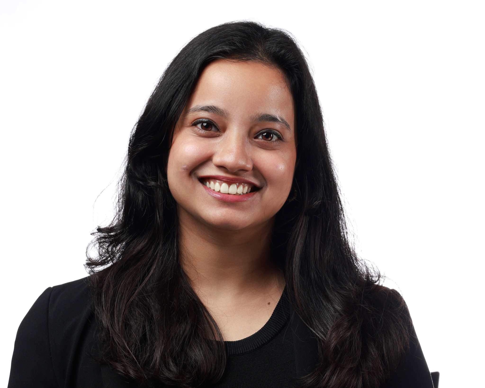

Engineering centre transition
Led a transition of 130 roles across seven regions to India, delivering a 70% cost reduction and $8.1M in annual savings.
Discuss this workINSEAD MBA CANDIDATE · STRATEGY & OPERATIONS
I turn strategy into measurable impact, from shaping the business case to bringing new ways of working to life.

01 / ABOUT
I’m a strategy and operations consultant who enjoys the space between deciding what should change and making it happen.
Across EY, Citi Private Bank, and KPMG, I’ve worked on operating models, process improvement, due diligence, and digital transformation. I’m now pursuing an MBA at INSEAD to move from delivering change to shaping the strategy behind it, with a focus on work that creates real impact for organisations and communities.
Outside work, you’ll often find me training for a half-marathon, travelling, or mentoring students.
02 / SELECTED IMPACT
Selected outcomes from my consulting and transformation work.
Led a transition of 130 roles across seven regions to India, delivering a 70% cost reduction and $8.1M in annual savings.
Discuss this work
Helped digitise account opening, cutting application time from 24 hours to seven minutes and the full process from three days to four hours.
Discuss this workManaged seven treasury initiatives, including BlackLine automation that saved four full-time roles and SAP cFIN work with $475K in projected value.
Discuss this work03 / EXPERIENCE & EDUCATION
Nine years working across consulting and financial services, now building on that experience at INSEAD.
INSEAD · France / Singapore
Vice President of INDEVOR, the impact and sustainability club; recipient of the Henriette and Norbert Albin Endowed MBA Scholarship.
EY · Finance Transformation & Global Business Services · Bangalore
Led global operating model and transition work, treasury transformation, due diligence, and an AI copilot for financial impact assessments.
Citi Private Bank · Strategic Initiatives · New York
Digitised personal banking account opening and delivered more than 50 enhancements across four major technology releases.
KPMG · Shared Services & Outsourcing Advisory · Bangalore
Worked on service transformation, HR centralisation, finance strategy, and process improvement for global clients.
Christ University · Bangalore
Majored in Finance & Investment, with a dissertation on microfinance and women’s empowerment.